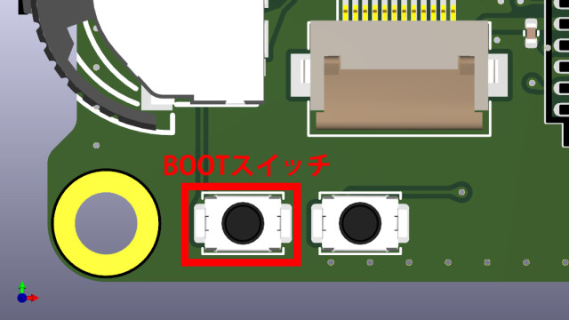

この項では周辺制御プロセッサのファームウェアを更新する方法を説明します。
更新方法
モード切り替え
まず、周辺制御プロセッサのファームウェアを更新するためにモードを切り替えます。
警告
モードの切り替えは必ずUSBケーブルを抜いた状態で行ってください！
モードの切り替えスイッチは内部でUSBのバススイッチの制御に使用しておりスイッチを操作することで物理的に経路を変更しています。
ケーブルが刺さった状態での変更は予期しない不具合に繋がります！

波形生成プロセッサのファームウェアを書き込むためには画像上のスイッチの位置に合わせます。
次に、USBケーブルを次に示す本体右下のBOOTスイッチを押しながら接続してください。

情報
USBケーブル接続時でも、BOOTスイッチを押しっぱなしにしながら隣のRESETボタンを一回押すことによってブートローダモードに入ることができます。
ファームウェアの書き込み
RPI-RP2という名称のUSBドライブとして認識されるため*.uf2をコピーします。
コピー完了と同時に自動で接続が解除され再起動します。

これで書き込みは完了です。